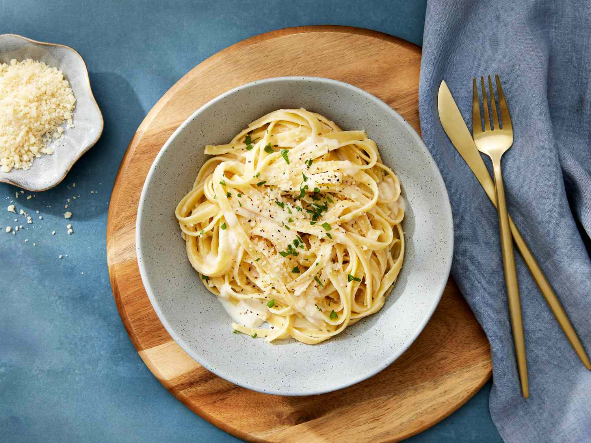

Fettuccine Alfredo Pasta

Velvety smooth and full of flavor, this Alfredo is the ultimate comfort food. Simple, indulgent, and ready in minutes.
- 200g fettuccine or penne
- 2 tbsp butter
- 4 garlic cloves, minced
- 1 cup heavy cream
- 3/4 cup parmesan, grated
- Salt, pepper to taste
- Chopped parsley (garnish)
- Cook pasta, reserve 1/2 cup water
- Sauté garlic in butter
- Add cream, simmer 2-3 mins
- Stir in parmesan until smooth
- Toss pasta in sauce, use pasta water if needed
- Season and garnish
- Serve hot
Back to Odin-Recipes